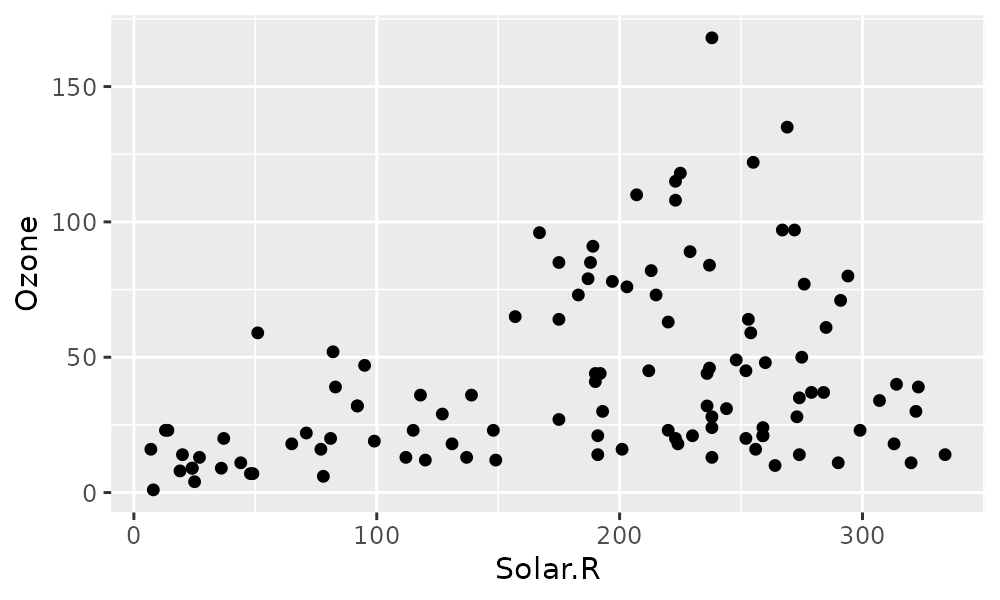
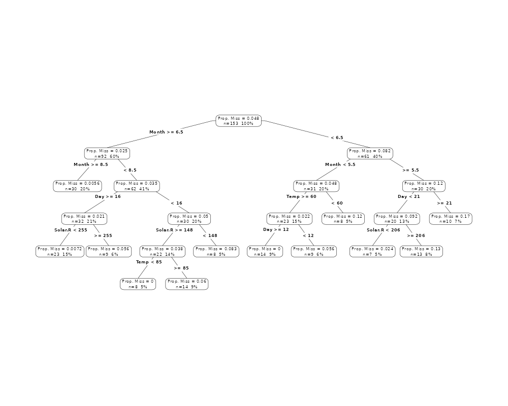

Introduction
Missing values are ubiquitous in data and need to be carefully
explored and handled in the initial stages of analysis. In this vignette
we describe the tools in the package naniar for exploring
missing data structures with minimal deviation from the common workflows
of ggplot and tidy data (Wickham, 2014,
Wickham,
2009).
Sometimes researchers or analysts will introduce or describe a mechanism for missingness. For example, they might explain that data from a weather station might have a malfunction when there are extreme weather events, and does not record temperature data when gusts speeds are high. This seems like a nice simple, logical explanation. However, like all good explanations, this one is simple, but the process to get there was probably not, and likely involved more time than you would have liked developing exploratory data analyses and models.
So when someone presents a really nice plot and a nice sensible explanation, the initial thought might be:
They worked it out themselves so quickly, so easy!
As if the problem was so easy to solve, they could accidentally solve it - they couldn’t not solve it.
However, I think that if you manage to get that on the first go, that is more like turning around and throwing a rock into a lake and it landing in a cup in a boat. Unlikely.
With that thought in mind, this vignette aims to work with the
following three questions, using the tools developed in
naniar and another package, visdat. Namely,
how do we:
- Start looking at missing data?
- Explore missingness mechanisms?
- Model missingness?
How do we start looking at missing data?
When you start with a dataset, you might do something where you look at the general summary, using functions such as:
These works really well when you’ve got a small amount of data, but when you have more data, you are generally limited by how much you can read.
So before you start looking at missing data, you’ll need to look at the data, but what does that even mean?
The package visdat helps you get a handle on this.
visdat provides a visualisation of an entire data frame at
once, and was heavily inspired by csv-fingerprint,
and functions like missmap, from Amelia.
There are two main functions in the visdat package:
-
vis_dat, and vis_miss
vis_dat
vis_dat visualises the whole dataframe at once, and
provides information about the class of the data input into R, as well
as whether the data is missing or not.
vis_miss
The function vis_miss provides a summary of whether the
data is missing or not. It also provides the amount of missings in each
columns.
vis_miss(airquality)
So here, Ozone and Solar.R have the most missing data, with Ozone having 24.2% missing data and Solar.R have 4.6%. The other variables do not have any missing data.
To read more about the functions available in visdat see
the vignette “Using
visdat”
Exploring missingness relationships
We can identify key variables that are missing using
vis_miss, but for further exploration, we need to explore
the relationship amongst the variables in this data:
- Ozone,
- Solar.R
- Wind
- Temp
- Month
- Day
Typically, when exploring this data, you might want to explore the variables Solar.R and Ozone, and so plot a scatterplot of solar radiation and ozone, doing something like this:
library(ggplot2)
ggplot(airquality,
aes(x = Solar.R,
y = Ozone)) +
geom_point()## Warning: Removed 42 rows containing missing values or values outside the scale range
## (`geom_point()`).
The problem with this is that ggplot does not handle missings be
default, and removes the missing values. This makes them hard to
explore. It also presents the strange question of “how do you visualise
something that is not there?”. One approach to visualising missing data
comes from ggobi and MANET, where we
replace “NA” values with values 10% lower than the minimum value in that
variable.
This process is performed and visualised for you with the
geom_miss_point() ggplot2 geom. Here, we illustrate by
exploring the relationship between Ozone and Solar radiation from the
airquality dataset.
ggplot(airquality,
aes(x = Solar.R,
y = Ozone)) +
geom_point()## Warning: Removed 42 rows containing missing values or values outside the scale range
## (`geom_point()`).
library(naniar)
ggplot(airquality,
aes(x = Solar.R,
y = Ozone)) +
geom_miss_point()Being a proper ggplot geom, it supports all of the standard features of ggplot2, such as facets,
ggplot(airquality,
aes(x = Solar.R,
y = Ozone)) +
geom_miss_point() +
facet_wrap(~Month)And different themes
ggplot(airquality,
aes(x = Solar.R,
y = Ozone)) +
geom_miss_point() +
facet_wrap(~Month) +
theme_dark()Visualising missings in variables
Another approach to visualising the missings in a dataset is to use
the gg_miss_var plot:
gg_miss_var(airquality)
The plots created with the gg_miss family all have a
basic theme, but you can customise them, and add arguments like so:
gg_miss_var(airquality) + theme_bw()
gg_miss_var(airquality) + labs(y = "Look at all the missing ones")To add facets in these plots, you can use the facet
argument:
gg_miss_var(airquality, facet = Month)
There are more visualisations available in naniar (each
starting with gg_miss_) - you can see these in the “Gallery
of Missing Data Visualisations” vignette..
It is important to note that for every visualisation of missing data
in naniar, there is an accompanying function to get the
dataframe of the plot out. This is important as the plot should not
return a dataframe - but we also need to make the data available for use
by the user so that it isn’t locked into a plot. You can find these
summary plots below, with miss_var_summary providing the
dataframe that gg_miss_var() is based on.
Replacing existing values with NA
When you are dealing with missing values, you might want to replace values with a missing values (NA). This is useful in cases when you know the origin of the data and can be certain which values should be missing. For example, you might know that all values of “N/A”, “N A”, and “Not Available”, or -99, or -1 are supposed to be missing.
naniar provides functions to specifically work on this
type of problem using the function replace_with_na. This
function is the compliment to tidyr::replace_na, which
replaces an NA value with a specified value, whereas
naniar::replace_with_na replaces a value with an NA:
-
tidyr::replace_na: Missing values turns into a value (NA –> -99) -
naniar::replace_with_na: Value becomes a missing value (-99 –> NA)
You can read more about this in the vignette “Replacing values with NA”
Tidy Missing Data: The Shadow Matrix
Representing missing data structure in a tidy format is achieved using the shadow matrix, introduced in Swayne and Buja. The shadow matrix is the same dimension as the data, and consists of binary indicators of missingness of data values, where missing is represented as “NA”, and not missing is represented as “!NA”. Although these may be represented as 1 and 0, respectively. This representation can be seen in the figure below, adding the suffix “_NA” to the variables. This structure can also be extended to allow for additional factor levels to be created. For example 0 indicates data presence, 1 indicates missing values, 2 indicates imputed value, and 3 might indicate a particular type or class of missingness, where reasons for missingness might be known or inferred. The data matrix can also be augmented to include the shadow matrix, which facilitates visualisation of univariate and bivariate missing data visualisations. Another format is to display it in long form, which facilitates heatmap style visualisations. This approach can be very helpful for giving an overview of which variables contain the most missingness. Methods can also be applied to rearrange rows and columns to find clusters, and identify other interesting features of the data that may have previously been hidden or unclear.

Illustration of data structures for facilitating visualisation of missings and not missings
The shadow functions provide a way to keep track of
missing values. The as_shadow function creates a dataframe
with the same set of columns, but with the column names added a suffix
_NA
as_shadow(airquality)## # A tibble: 153 × 6
## Ozone_NA Solar.R_NA Wind_NA Temp_NA Month_NA Day_NA
## <fct> <fct> <fct> <fct> <fct> <fct>
## 1 !NA !NA !NA !NA !NA !NA
## 2 !NA !NA !NA !NA !NA !NA
## 3 !NA !NA !NA !NA !NA !NA
## 4 !NA !NA !NA !NA !NA !NA
## 5 NA NA !NA !NA !NA !NA
## 6 !NA NA !NA !NA !NA !NA
## 7 !NA !NA !NA !NA !NA !NA
## 8 !NA !NA !NA !NA !NA !NA
## 9 !NA !NA !NA !NA !NA !NA
## 10 NA !NA !NA !NA !NA !NA
## # ℹ 143 more rowsbind_shadow attaches a shadow to the current dataframe,
a format we call “nabular”, a portmanteau of NA a
tabular. You can also use nabular to do the
same thing:
aq_shadow <- bind_shadow(airquality)
aq_nab <- nabular(airquality)
library(dplyr)##
## Attaching package: 'dplyr'## The following objects are masked from 'package:stats':
##
## filter, lag## The following objects are masked from 'package:base':
##
## intersect, setdiff, setequal, union
glimpse(aq_shadow)## Rows: 153
## Columns: 12
## $ Ozone <int> 41, 36, 12, 18, NA, 28, 23, 19, 8, NA, 7, 16, 11, 14, 18, 1…
## $ Solar.R <int> 190, 118, 149, 313, NA, NA, 299, 99, 19, 194, NA, 256, 290,…
## $ Wind <dbl> 7.4, 8.0, 12.6, 11.5, 14.3, 14.9, 8.6, 13.8, 20.1, 8.6, 6.9…
## $ Temp <int> 67, 72, 74, 62, 56, 66, 65, 59, 61, 69, 74, 69, 66, 68, 58,…
## $ Month <int> 5, 5, 5, 5, 5, 5, 5, 5, 5, 5, 5, 5, 5, 5, 5, 5, 5, 5, 5, 5,…
## $ Day <int> 1, 2, 3, 4, 5, 6, 7, 8, 9, 10, 11, 12, 13, 14, 15, 16, 17, …
## $ Ozone_NA <fct> !NA, !NA, !NA, !NA, NA, !NA, !NA, !NA, !NA, NA, !NA, !NA, !…
## $ Solar.R_NA <fct> !NA, !NA, !NA, !NA, NA, NA, !NA, !NA, !NA, !NA, NA, !NA, !N…
## $ Wind_NA <fct> !NA, !NA, !NA, !NA, !NA, !NA, !NA, !NA, !NA, !NA, !NA, !NA,…
## $ Temp_NA <fct> !NA, !NA, !NA, !NA, !NA, !NA, !NA, !NA, !NA, !NA, !NA, !NA,…
## $ Month_NA <fct> !NA, !NA, !NA, !NA, !NA, !NA, !NA, !NA, !NA, !NA, !NA, !NA,…
## $ Day_NA <fct> !NA, !NA, !NA, !NA, !NA, !NA, !NA, !NA, !NA, !NA, !NA, !NA,…
glimpse(aq_nab)## Rows: 153
## Columns: 12
## $ Ozone <int> 41, 36, 12, 18, NA, 28, 23, 19, 8, NA, 7, 16, 11, 14, 18, 1…
## $ Solar.R <int> 190, 118, 149, 313, NA, NA, 299, 99, 19, 194, NA, 256, 290,…
## $ Wind <dbl> 7.4, 8.0, 12.6, 11.5, 14.3, 14.9, 8.6, 13.8, 20.1, 8.6, 6.9…
## $ Temp <int> 67, 72, 74, 62, 56, 66, 65, 59, 61, 69, 74, 69, 66, 68, 58,…
## $ Month <int> 5, 5, 5, 5, 5, 5, 5, 5, 5, 5, 5, 5, 5, 5, 5, 5, 5, 5, 5, 5,…
## $ Day <int> 1, 2, 3, 4, 5, 6, 7, 8, 9, 10, 11, 12, 13, 14, 15, 16, 17, …
## $ Ozone_NA <fct> !NA, !NA, !NA, !NA, NA, !NA, !NA, !NA, !NA, NA, !NA, !NA, !…
## $ Solar.R_NA <fct> !NA, !NA, !NA, !NA, NA, NA, !NA, !NA, !NA, !NA, NA, !NA, !N…
## $ Wind_NA <fct> !NA, !NA, !NA, !NA, !NA, !NA, !NA, !NA, !NA, !NA, !NA, !NA,…
## $ Temp_NA <fct> !NA, !NA, !NA, !NA, !NA, !NA, !NA, !NA, !NA, !NA, !NA, !NA,…
## $ Month_NA <fct> !NA, !NA, !NA, !NA, !NA, !NA, !NA, !NA, !NA, !NA, !NA, !NA,…
## $ Day_NA <fct> !NA, !NA, !NA, !NA, !NA, !NA, !NA, !NA, !NA, !NA, !NA, !NA,…
all.equal(aq_shadow, aq_nab)## [1] TRUEDoing this provides a consistent syntax for referring to variables with missing values.
Nabular data provides a useful pattern to explore missing values, grouping by the missing/complete of one variable and looking at the mean and other summary values. Below we show the mean, sd, variance, and min and max values of Solar.R for when Ozone is present, and when it is missing.
airquality %>%
bind_shadow() %>%
group_by(Ozone_NA) %>%
summarise_at(.vars = "Solar.R",
.funs = c("mean", "sd", "var", "min", "max"),
na.rm = TRUE)## # A tibble: 2 × 6
## Ozone_NA mean sd var min max
## <fct> <dbl> <dbl> <dbl> <int> <int>
## 1 !NA 185. 91.2 8309. 7 334
## 2 NA 190. 87.7 7690. 31 332Below, we can plot the distribution of Temperature, plotting for values of temperature when Ozone is missing, and when it is not missing.
ggplot(aq_shadow,
aes(x = Temp,
colour = Ozone_NA)) +
geom_density()We can also explore the value of air temperature and humidity based on missingness of each.
# what if we explore the value of air temperature and humidity based on
# the missingness of each
oceanbuoys %>%
bind_shadow() %>%
ggplot(aes(x = air_temp_c,
fill = humidity_NA)) +
geom_histogram()## `stat_bin()` using `bins = 30`. Pick better value with `binwidth`.## Warning: Removed 81 rows containing non-finite outside the scale range
## (`stat_bin()`).
oceanbuoys %>%
bind_shadow() %>%
ggplot(aes(x = humidity,
fill = air_temp_c_NA)) +
geom_histogram()## `stat_bin()` using `bins = 30`. Pick better value with `binwidth`.## Warning: Removed 93 rows containing non-finite outside the scale range
## (`stat_bin()`).Binding the shadow here also has great benefits when combined with imputation.
Visualising imputed values
With the easy-to-use simputation
package, we impute values for Ozone, then visualise the data:
##
## Attaching package: 'simputation'## The following object is masked from 'package:naniar':
##
## impute_median
library(dplyr)
airquality %>%
impute_lm(Ozone ~ Temp + Wind) %>%
ggplot(aes(x = Temp,
y = Ozone)) +
geom_point()Note that we no longer get any errors regarding missing observations - because they are all imputed! But this comes at a cost: we also no longer have information about where the imputations are - they are now sort of invisible.
Using the shadow matrix to keep track of where the missings are, you can actually keep track of the imputations, by colouring by what was previously missing in Ozone.
aq_shadow %>%
as.data.frame() %>%
impute_lm(Ozone ~ Temp + Wind) %>%
ggplot(aes(x = Temp,
y = Ozone,
colour = Ozone_NA)) +
geom_point()Numerical summaries of missing values
naniar also provide numerical summaries for missing
data. Two convenient counters of complete values and missings are
n_miss() and n_complete(). These work on both
dataframes and vectors, similar to dplyr::n_distinct()
dplyr::n_distinct(airquality)## [1] 153
dplyr::n_distinct(airquality$Ozone)## [1] 68
n_miss(airquality)## [1] 44
n_miss(airquality$Ozone)## [1] 37
n_complete(airquality)## [1] 874
n_complete(airquality$Ozone)## [1] 116The syntax for the other numerical sumamries in naniar
are miss_, and then case, or var
to refer to cases or variables. There are then summary,
table, run, span, and
cumsum options to explore missing data.
prop_miss_case and pct_miss_case return
numeric value describing the proportion or percent of missing values in
the dataframe.
prop_miss_case(airquality)## [1] 0.2745098
pct_miss_case(airquality)## [1] 27.45098miss_case_summary() returns a numeric value that
describes the number of missings in a given case (aka row), the percent
of missings in that row.
miss_case_summary(airquality)## # A tibble: 153 × 3
## case n_miss pct_miss
## <int> <int> <dbl>
## 1 5 2 33.3
## 2 27 2 33.3
## 3 6 1 16.7
## 4 10 1 16.7
## 5 11 1 16.7
## 6 25 1 16.7
## 7 26 1 16.7
## 8 32 1 16.7
## 9 33 1 16.7
## 10 34 1 16.7
## # ℹ 143 more rowsmiss_case_table() tabulates the number of missing values
in a case / row. Below, this shows the number of missings in a case:
- There are 111 cases with 0 missings, which comprises about 72% of the data.
- There are then 40 cases with 1 missing, these make up 26% of the data.
- There are then 2 cases with 2 missing - these make up 1% of the data.
miss_case_table(airquality)## # A tibble: 3 × 3
## n_miss_in_case n_cases pct_cases
## <int> <int> <dbl>
## 1 0 111 72.5
## 2 1 40 26.1
## 3 2 2 1.31Similar to pct_miss_case(),
prop_miss_case(), pct_miss_var() and
prop_miss_var() returns the percent and proportion of
variables that contain a missing value.
prop_miss_var(airquality)## [1] 0.3333333
pct_miss_var(airquality)## [1] 33.33333miss_var_summary() then returns the number of missing
values in a variable, and the percent missing in that variable.
miss_var_summary(airquality)## # A tibble: 6 × 3
## variable n_miss pct_miss
## <chr> <int> <num>
## 1 Ozone 37 24.2
## 2 Solar.R 7 4.58
## 3 Wind 0 0
## 4 Temp 0 0
## 5 Month 0 0
## 6 Day 0 0Finally, miss_var_table(). This describes the number of
missings in a variable.
- There are 4 variables with 0 missings, comprising 66.67% of variables in the dataset.
- There is 1 variable with 7 missings
- There is 1 variable with 37 missings
miss_var_table(airquality)## # A tibble: 3 × 3
## n_miss_in_var n_vars pct_vars
## <int> <int> <dbl>
## 1 0 4 66.7
## 2 7 1 16.7
## 3 37 1 16.7There are also summary functions for exploring missings that occur over a particular span or period of the dataset, or the number of missings in a single run:
miss_var_run() can be particularly useful in time series
data, as it allows you to provide summaries for the number of missings
or complete values in a single run. The function
miss_var_run() provides a data.frame of the run length of
missings and complete values. To explore this function we will use the
built-in dataset, pedestrian, which contains hourly counts
of pedestrians from four locations around Melbourne, Australia, from
2016.
To use miss_var_run(), you specify the variable that you
want to explore the runs of missingness for, in this case,
hourly_counts:
miss_var_run(pedestrian,
hourly_counts)## # A tibble: 35 × 2
## run_length is_na
## <int> <chr>
## 1 6628 complete
## 2 1 missing
## 3 5250 complete
## 4 624 missing
## 5 3652 complete
## 6 1 missing
## 7 1290 complete
## 8 744 missing
## 9 7420 complete
## 10 1 missing
## # ℹ 25 more rowsmiss_var_span() is used to determine the number of
missings over a specified repeating span of rows in variable of a
dataframe. Similar to miss_var_run(), you specify the
variable that you wish to explore, you then also specify the size of the
span with the span_every argument.
miss_var_span(pedestrian,
hourly_counts,
span_every = 100)## # A tibble: 377 × 6
## span_counter n_miss n_complete prop_miss prop_complete n_in_span
## <int> <int> <int> <dbl> <dbl> <int>
## 1 1 0 100 0 1 100
## 2 2 0 100 0 1 100
## 3 3 0 100 0 1 100
## 4 4 0 100 0 1 100
## 5 5 0 100 0 1 100
## 6 6 0 100 0 1 100
## 7 7 0 100 0 1 100
## 8 8 0 100 0 1 100
## 9 9 0 100 0 1 100
## 10 10 0 100 0 1 100
## # ℹ 367 more rowsUsing group_by with naniar
Every miss_* summary function that returns a dataframe
can be used with dplyr group_by(). For example, if you
would like to look at the number of missing values for all variables of
pedestrian data.
pedestrian %>% miss_var_summary()## # A tibble: 9 × 3
## variable n_miss pct_miss
## <chr> <int> <num>
## 1 hourly_counts 2548 6.76
## 2 date_time 0 0
## 3 year 0 0
## 4 month 0 0
## 5 month_day 0 0
## 6 week_day 0 0
## 7 hour 0 0
## 8 sensor_id 0 0
## 9 sensor_name 0 0We see that this is in hourly_counts. We can then
explore this by month, and filder by the variable being
hourly_counts, since it is the only one with missing
values.
## # A tibble: 12 × 4
## # Groups: month [12]
## month variable n_miss pct_miss
## <ord> <chr> <int> <num>
## 1 January hourly_counts 0 0
## 2 February hourly_counts 0 0
## 3 March hourly_counts 0 0
## 4 April hourly_counts 552 19.2
## 5 May hourly_counts 72 2.42
## 6 June hourly_counts 0 0
## 7 July hourly_counts 0 0
## 8 August hourly_counts 408 13.7
## 9 September hourly_counts 0 0
## 10 October hourly_counts 412 7.44
## 11 November hourly_counts 888 30.8
## 12 December hourly_counts 216 7.26Modelling missingness
The final question we proposed in this vignette was:
- Can we model missingness?
Sometimes it can be impractical to explore all of the variables that have missing data. One approach, however, is to model missing data using methods from Tierney et el. (2015).
Here, the approach is to predict the proportion of missingness in a
given case, using all variables. There is a little helper function to
add a column with the proportion of cases or rows missing -
add_prop_miss(). This created a column named “prop_miss”,
which is the proportion of missing values in that row.
airquality %>%
add_prop_miss() %>%
head()## Ozone Solar.R Wind Temp Month Day prop_miss_all
## 1 41 190 7.4 67 5 1 0.0000000
## 2 36 118 8.0 72 5 2 0.0000000
## 3 12 149 12.6 74 5 3 0.0000000
## 4 18 313 11.5 62 5 4 0.0000000
## 5 NA NA 14.3 56 5 5 0.3333333
## 6 28 NA 14.9 66 5 6 0.1666667We can then use a model like decision trees to predict which variables and their values are important for predicting the proportion of missingness:
library(rpart)
library(rpart.plot)
airquality %>%
add_prop_miss() %>%
rpart(prop_miss_all ~ ., data = .) %>%
prp(type = 4, extra = 101, prefix = "Prop. Miss = ")## Warning: Cannot retrieve the data used to build the model (so cannot determine roundint and is.binary for the variables).
## To silence this warning:
## Call prp with roundint=FALSE,
## or rebuild the rpart model with model=TRUE.
Here we can see that this produces quite a complex tree - this can be pruned back and the depth of the decision tree controlled.
Summary
The tools in naniar help us identify where missingness
is, while maintaining a tidy workflow. We care about these mechanisms or
these patterns because they can help us understand potential mechanisms,
such as equipment failures, and then identify possible solutions based
upon this evidence.
Future development
- Make
naniarwork with big data tools likesparklyr, andsparklingwater. - Further develop methods for handling and visualising imputations,
and multiple imputation. Other plans to extend the
geom_miss_family to include: - Categorical variables
- Bivariate plots: scatterplots, density overlays
- Provide tools for assessing goodness of fit for classical approaches
of MCAR, MAR, and MNAR (graphical inference from
nullaborpackage)
Thank you
Firstly, thanks to Di Cook for giving the initial inspiration for the
package and laying down the rich theory and literature that the work in
naniar is built upon. Naming credit (once again!) goes to
Miles McBain. Among various other things, Miles also worked out how to
overload the missing data and make it work as a geom. Thanks also to
Colin Fay for helping me understand tidy evaluation and for features
such as replace_with_na, miss_*_cumsum, and
more.
References
- MANET: https://www.rosuda.org/MANET/
- ggobi: https://en.wikipedia.org/wiki/GGobi
- visdat: https://github.com/ropensci/visdat
- Tierney NJ, Harden FA, Harden MJ, Mengersen, KA, Using decision trees to understand structure in missing data BMJ Open 2015;5:e007450. doi: 10.1136/bmjopen-2014-007450